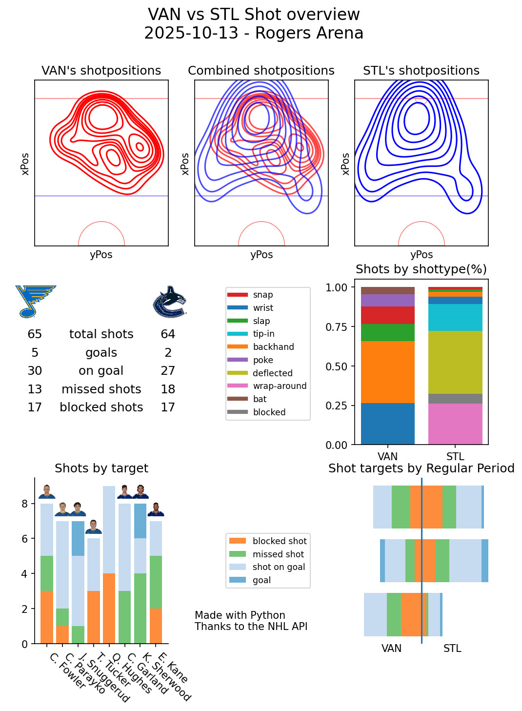

During an ACL rupture, I was forced to sit on the couch. The allmighty algorithm did decide, that I should be shown Ice Hockey and I got interested. Once I saw the NHL API I got hooked.
So I started writing away, analysing and visualising the data.
What does it do?
My script will:
- Take the NHL games by game Id from yesterday
- Fetch the data from the public NHL API
- Create multiple sub graphs
- Create a visualisation of these subgraphs and post them on bluesky
The project
I based the project on the public documentation of the NHL API,which can be found here
Using this data as a basis, I am performing some simple visualisations

As you can see, I am performing some visualisations as well as some analysis with the kernel densitiy estimation of the shotpositions.
The graph for a game is posted on an automated bluesky account, which can be found here
There exists one Version of the project which is purely working with API Calls, found here, and another version, found here, which moves the data into a sqlite database for further analysis.
Tech Stack
The following technologies were used within the project:
- Python
- SQLite
- NumPy
- matplotLib
- pandas